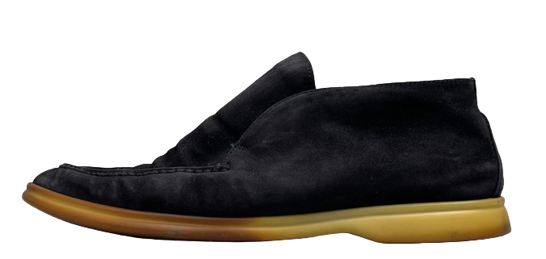
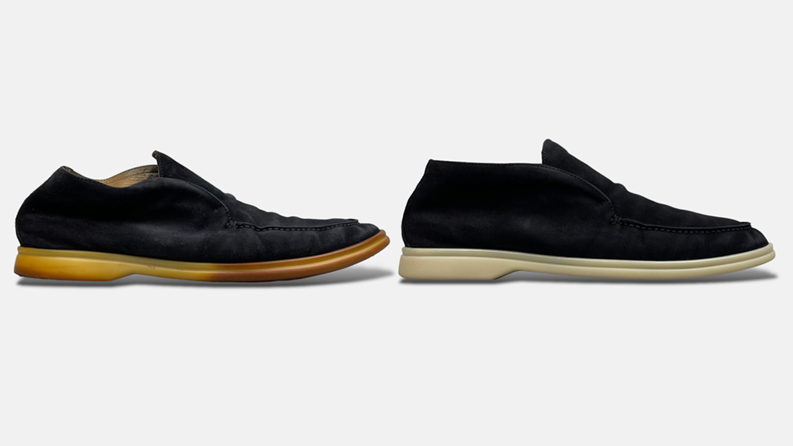

BLEACH MOSCOW / КАТАЛОГ УСЛУГ
Услуги мастерской
Бережный уход за тем, что вам дорого.
От деликатной чистки до сложной реставрации.

Обувь. Сумки. Гардероб.Обувь

Глубокая чистка. Бережный уход. Снова любимая пара.
Уход для вашей вещи
01Чистка FULL
Чистка FULL подходит для низких пар обуви (кроссовки, туфли, босоножки и т.д.), выполненных из текстиля, светлой замши, тёмной замши и кожи без сильных повреждений цвета и текстуры. Позволяет удалить загрязнения и освежить внешний вид пары.
Состав ухода и стоимость ↗02Чистка PREMIUM
Чистка PREMIUM подходит для ботинок, сапог и любой зимней обуви, выполненной из текстиля, светлой замши, тёмной замши и кожи без сильных повреждений цвета и текстуры. Позволяет удалить загрязнения и освежить внешний вид пары.
03Чистка UGG
Комплекс UGG подойдёт для замшевых UGG любой высоты, а также аналогов популярной обуви с идентичными характеристиками. Позволяет убрать с пары загрязнения и следы реагентов, восстановить однородность и насыщенность цвета замши.
04Базовый уход для классической обуви
Базовый уход предназначен для классических низких пар обуви (туфли, лоферы, полуботинки и т.д.), выполненных из кожи. Позволяет восстановить внешний вид обуви, не имеющей сильных повреждений текстуры. Обработка профессиональным средствами вернёт паре блеск, восстановит насыщенность цвета ранта и каблука, скроет мелкие дефекты.
05Водоотталкивающая пропитка для обуви
Водоотталкивающая пропитка для обуви позволяет защитить пары от промокания, предотвращает проникновение реагентов и грязи в волокно материала, тем самым увеличивая срок службы обуви. Обработка обуви водоотталкивающим составом актуальна в любое время года, так как его состав создаёт защитный барьер для воздействия любых внешних факторов на изделие.
06Замена шнурков на обуви
Замена шнурков необходима любым парам, шнурки на которых уже имеют износ. Со временем грязь проникает внутрь волокна и пагубно влияет на внешний вид и общее состояние изделия. Также из-за постоянного трения на шнурках появляются разрывы и заломы. Часто из-за отсутствия своевременной чистки пигмент впитывается в материал шнурков, что приводит к невозвратному изменению их цвета.
07Комплекс FULL
Комплекс PREMIUM подходит для ботинок, сапог и любой зимней обуви, полностью выполненных или имеющих элементы из кожи и замши. Рекомендуется при наличии повреждений на коже (царапины, потёртости) и потере цвета замши. Позволяет восстановить однородность материалов и улучшить их внешний вид.
08Комплекс PREMIUM
Комплекс PREMIUM подходит для ботинок, сапог и любой зимней обуви, полностью выполненных или имеющих элементы из кожи и замши. Рекомендуется при наличии повреждений на коже (царапины, потёртости) и потере цвета замши. Позволяет восстановить однородность материалов и улучшить их внешний вид.
09Реставрация лаковых туфлей
Локальная работа с повреждениями на кожаных каблуках. Позволяет восстановить потёртости, царапины и разрывы кожи на каблуках, обновить внешний вид повреждённых элементов.
10Реставрация каблуков и мысов на обуви
Локальная работа с повреждениями на каблуках пар, выполненных из лаковой кожи. Позволяет восстановить потёртости, царапины и разрывы кожи на каблуках, обновить внешний вид повреждённых элементов.
11Замена подошвы на кедах
Замена подошвы на кедах актуальна для любых пар на кедной подошве. Частым следствием эксплуатации повседневной обуви является стаптывание и стирание подошвы.
12Профилактика обуви
Профилактика обуви позволяет защитить подошву от быстрого износа. Наиболее популярна данная услуга для классических пар на кожаной подошве - такой материал быстро стирается и повреждается.
13Набойки для обуви
Набойки - неотъемлемая деталь большинства моделей обуви. Со временем материал снашивается, что приводит к ухудшению внешнего вида обуви.
14Перешив задников на обуви
Перешив задников на обуви - услуга, позволяющая исправить дефекты на внутренних мягких задниках ваших кроссовок/кед/ботинок.
15Внутренняя заплатка на обуви
Внутренняя заплатка на обуви устанавливается в случае сквозного разрыва на кожаной текстильной или замшевой обуви. Дополнительная латка из кожи устанавливается с внутренней стороны обуви, чтобы скрепить повреждение.
16Замена молнии на обуви
Замена молнии на обуви производится при наличии повреждений на данном элементе. Цвет материала подбирается индивидуально под каждое изделие.
Сумки

Уход за вещами, которые хочется сохранить.
Уход для вашей вещи
01Чистка сумки
Чистка корпуса сумки актуальна при наличии видимых или скрытых загрязнений на изделии.
02Покраска сумки
Покраска сумки предназначена для кожаных сумок, имеющих повреждения текстуры и цвета. Подходит для сумок, полностью выполненных из кожи, или имеющих кожаные элементы. Мы выполняем реставрацию с восстановлением повреждений на коже, покраска позволяет вернуть сумке её изначальный цвет.
03Покраска клатча
Покраска клатча предназначена для небольших кожаных клатчей, имеющих повреждения текстуры и цвета.
04Покраска рюкзака
Покраска рюкзака предназначена для кожаных изделий, имеющих повреждения текстуры и цвета.
05Покраска кошелька
Покраска кошелька предназначена для кошельков, выполненных из кожи, или имеющих кожаные элементы.
06Перешив ручек на сумке
Перешив ручек на сумке актуален при сильных повреждениях данного элемента.
07Перешив элементов на сумке
Перешив элементов на сумке подходит при невозможности реставрации и ремонта повреждения или желании достичь идеального результата.
08Перешив кожи на сумках Louis Vuitton
Перешив кожи на сумках Louis Vuitton – услуга, рассчитанная с учётом особенностей материалов, используемых брендов.
09Реставрация углов сумки
Реставрация уголков сумки актуальна при наличии локальных повреждений на изделии. Углы сумок наиболее часто подвергаются трению, вследствие чего на них появляются дефекты, влияющие на общий вид изделия.
10Реставрация / восстановление уреза
Реставрация/восстановление уреза актуально для любых изделий, на которых присутствует данное покрытие.
11Замена молнии на сумке
Замена молнии на сумке необходима при нарушении целостности элемента. При постоянной эксплуатации молния подвергается нагрузке, что может повлечь за собой разрывы или поломку звеньев.
12Замена молнии на кошельке
Замена молнии на кошельке необходима при нарушении целостности элемента. При постоянной эксплуатации молния подвергается нагрузке, что может повлечь за собой разрывы или поломку звеньев.
13Замена молнии на клатче
Замена молнии на клатче необходима при нарушении целостности элемента. При постоянной эксплуатации молния подвергается нагрузке, что может повлечь за собой разрывы или поломку звеньев.
14Замена молнии на рюкзаке
Замена молнии на рюкзаке необходима при нарушении целостности элемента. При постоянной эксплуатации молния подвергается нагрузке, что может повлечь за собой разрывы или поломку звеньев.
15Ремонт или изготовление петельки
Ремонт или изготовление петельки подойдёт для любых сумок и аксессуаров, имеющих повреждение на петельках.
16Восстановление фурнитуры
Восстановление покрытия фурнитуры необходимо металлическим элементам при появлении царапин и потёртостей. Наиболее часто услуга требуется для пряжек ремней и декоративных элементов сумок.
Сервис Loro Piana

Особое внимание к вашей паре Loro Piana.
Уход для вашей вещи
01Замена подошвы на Loro Piana
Замена подошвы Loro Piana необходима, когда оригинальная подошва теряет свои первоначальные качества. Если каучуковая подошва потемнела и рассохлась.
02Чистка обуви Loro Piana
Чистка обуви Loro Piana выполняется с учётом особенностей материалов премиальной обуви.
03Восстановление цвета обуви Loro Piana
Восстановление цвета обуви Loro Piana подходит для замшевых пар, цвет которых стал менее насыщенным. Комплекс по восстановлению цвета включает в себя полную чистку пары, а также тонировку замшу.
04Покраска обуви Loro Piana
Покраска обуви Loro Piana подходит для кожаных пар, имеющих повреждения текстуры и цвета.
Химчистка одежды

Бережный уход за любимой одеждой.
Что мы делаем
01Химчистка верхней одежды
Бережный уход за верхней одеждой. Способ обработки подбираем по составу материала, отделке и рекомендациям производителя. Объём работ и стоимость согласуем после оценки изделия.
Подробнее о химчистке одежды ↗02Химчистка сорочек
Уход за сорочками с учётом состава ткани и состояния воротника и манжет. Перед чисткой оцениваем загрязнения и особенности изделия; подходящий состав работ уточнит мастер.
Подробнее о химчистке одежды ↗03Химчистка трикотажных изделий
Деликатный уход за трикотажными изделиями. Учитываем состав волокон, структуру вязки и маркировку по уходу. Состояние вещи и допустимый способ чистки оцениваем до начала работ.
Подробнее о химчистке одежды ↗